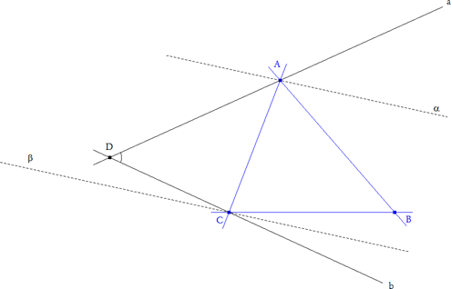
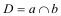
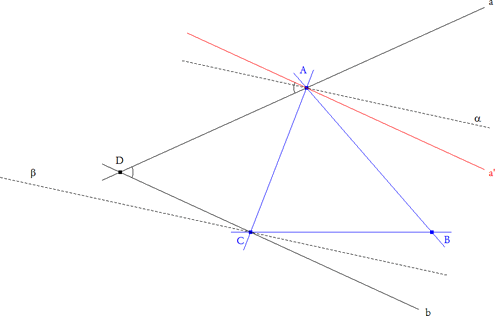

Para el aula. Probelma 314 Sea ABC un triángulo cualquiera. Con un punto D se obtiene un cuadrilátero ABCD. Construir las bisectrices de los ángulos DAB y DCB. ¿Dónde colocar el punto D para que las bisectrices de DAB y DCB sean paralelas? Estudiar esta situación y justificar vuestras conjeturas. Clapponi, P. (1994): Activité .. des bissectrices paralleles. Petit X 35,. [Clapponi es un seudónimo de Philippe Clarou - Bernard Capponi]. Esta actividad comienza por una exploración que puede ser beneficiosa con la ayuda de un logicial como Cabri-Géomètre.
Solución de José María Pedret, Ingeniero Naval. Esplugues de Llobregat (Barcelona). (1 de junio de 2006) |
|
SOLUCIÓN |
|
D debe estar en el arco capaz de ángulo B y cuerda AC
Para verlo, prescindamos del punto D y emprendamos un camino inverso al enunciado.
 figura 2
 Hay muchas maneras de encontrar el lugar geométrico de D, entre ellas la siguiente. Como AB y CB son rectas fijas y α, β son rectas paralelas, a y b son rectas que se corresponden en una homografía de haces de rectas de centros A y B respectivamente; lo que nos indica que el lugar geométrico es una cónica.
 figura 3
Para identificar la cónica basta superponer el haz C* sobre el haz A* y definir la homografía que a "a" le hace corresponder " a' " (que es "b" superpuesta"). Tomando ahora α como eje de simetría, "a" es simétrica de AB y a' es simétrica de CB, entonces "a" y " a' " forman el mismo ángulo que AB y BC y éste no es más que el ángulo B. Entonces "a" y "b" forman un ángulo constante B y por ello los haces son congruentes lo que significa que la cónica generada por D es una CIRCUNFERENCIA que pasa por A y C y es tal que el ángulo ADC es B. c.q.d. |